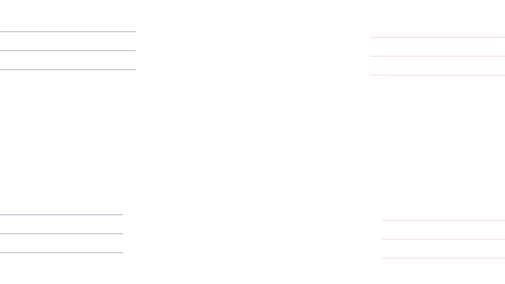

HOW TO PROMOTE ／ 手順書
ディスコードのサーバー宣伝、
やり方は3行から始まる。
宣伝のやり方を調べると「貼りましょう」で終わっている説明が多く見つかります。実際に詰まるのは何を書くかです。ここでは紹介文の3行を軸に、本物の文章を添削しながら、投稿の仕方と続け方まで書きます。
一宣伝のやり方は3段階
準備・投稿・継続
宣伝のやり方は、突き詰めると準備・投稿・継続の3段階しかありません。多くの人が「投稿」だけを宣伝だと思っていますが、準備で決まる部分が大きく、継続で差がつきます。
-
入口を整える
宣伝で人が来ても、最初に見る部屋が空だとすぐ抜けられます。ルール・自己紹介・雑談の3つだけでも先に作ってください。詳しくはサーバーの作り方で書いています。
-
招待リンクを期限なしで作る
Discordの招待リンクは初期設定で期限が付きます。切れたリンクを貼っても誰も入れません。
-
紹介文を3行で書く
何の／誰向け／入ったら何がある。この3つだけです。
-
貼れる場所へ投稿する
宣伝サーバーと一覧サイトの両方へ。場所の種類は宣伝できる場所にまとめています。
-
続けて、直す
バンプを間隔ごとに押し、反応を見て紹介文を書き直します。
最初にやること
いま何も無い状態なら、順番は「入口 → リンク → 紹介文 → 投稿」で固定です。逆にすると全部やり直しになります。紹介文を先に凝っても、入口が空なら人は残りませんし、リンクが切れていれば紹介文が誰にも読まれません。
かかる時間の目安
準備（入口＋リンク＋紹介文）はまとめて1〜2時間で終わります。投稿は1か所あたり数分です。時間がかかるのは継続のほうで、これは1日数分を続ける形になります。
二紹介文の書き方
3行で足りる
紹介文は長く書くほど良いと思われがちですが、逆です。宣伝サーバーの投稿は流れていくので、長文は読まれる前に押し流されます。必要なのは次の3行だけです。
- 1行目：何のサーバーか
- 2行目：誰向けか
- 3行目：入ったら何があるか
読む側は「自分に関係あるか」を数秒で判断しています。関係があると分かった人だけがリンクを踏みます。3行は、その判断に必要な最小の情報です。それ以上は、入ってから読んでもらえば足ります。
1行目：何のサーバーか
ここでジャンルを言い切ってください。「なんでもあります」「まったり交流」は、何のサーバーか伝わりません。伝わらない紹介文は、読み飛ばされるのではなく「自分には関係ない」と判断されます。
言い切りの例
- 「マインクラフトの工業MODを一緒に遊ぶサーバーです」
- 「イラストを描く人が作業通話をする場所です」
- 「AIツールの使い方を聞き合うサーバーです」
2行目：誰向けか
対象を書くと、合う人が来て、合わない人が来なくなります。後者が重要です。合わない人が入って抜けるのを繰り返すと、人数だけ動いて中身が育ちません。
- 初心者歓迎／経験者中心
- 通話する人／文字だけの人
- ソロで遊ぶ人／固定で組みたい人
3行目：入ったら何があるか
部屋の名前を2〜3個挙げるだけで十分です。抽象的な「楽しい雰囲気です」より、具体的な部屋名のほうが中身を想像できます。
よくある紹介文を添削する
実際に見かける形を直してみます。左が元、右が直したものです。
サーバー作りました！
まったり雑談してます。
誰でも歓迎なので気軽に来てください！
https://discord.gg/xxxxxx
問題：何のサーバーか分からない。「誰でも歓迎」は誰にも刺さらない。入ったら何があるかも書かれていない。これは招待リンクだけを貼っているのと同じです。
マイクラの工業MODを一緒に建てるサーバーです。
初心者歓迎・通話なしOK。
#質問部屋 / #進捗 / #鯖内マップ があります。
https://discord.gg/xxxxxx
直した点：まったり雑談→ジャンルを言い切り、誰でも歓迎→対象を絞り、部屋名を3つ足しました。行数は変わっていません。
【メンバー200人突破！】
今なら管理者募集中！！
アクティブ多数！盛り上がってます！
来ないと損！！！
問題：数字と勢いだけで、中身が1行も無い。「今なら管理者募集」は、運営が回っていない印象を与えます。「来ないと損」は煽りとして受け取られ、逆効果です。
FPSのフルパを組むサーバーです（現在200人）。
週末の夜に集まることが多いです。
#募集板 に書けば誰かしら反応します。
直した点：数字は消さずに文中へ入れると自慢に見えません。来ないと損は削除。代わりにいつ・どこで・何が起きるかを書きました。
サーバー名の付け方
一覧サイトではサーバー名が最初に目に入ります。ここにジャンルが入っていないと、紹介文を読む前に飛ばされます。
- ジャンルを名前に入れる——「〇〇の集い」だけだと何の集いか分かりません
- 記号の使いすぎに注意——読めない名前は覚えられません
- 長すぎない——一覧では途中で切られます
書いてはいけない言葉
「今だけ」「来ないと損」「絶対楽しい」などの煽りは逆効果です。宣伝の場に慣れている人ほど、この種の言葉を見た時点で読むのをやめます。書くべきなのは誇張ではなく、具体です。
- 実態と違う人数・活動——入った瞬間に分かります
- 他のサーバーとの比較で下げる書き方——運営者が見ているので印象が悪くなります
- 年齢制限のある内容を、制限の無い場所に書く——規約違反です
テンプレート（写して使う）
そのまま写して、山括弧の中だけ差し替えてください。
<ジャンル>を<何をする>サーバーです。
<対象：初心者歓迎／経験者中心／通話あり・なし など>。
#<部屋1> / #<部屋2> / #<部屋3> があります。
https://discord.gg/<招待コード>
※ 期限なしの招待リンクを貼ること（作り方は下の「三」）
【サーバー名】<ジャンルを入れた名前>
<ジャンル>を<何をする>サーバーです。
<対象>。<人数や活動時間などの事実>。
■ 主な部屋
・#<部屋1> … <何をする所か>
・#<部屋2> … <何をする所か>
・#<部屋3> … <何をする所か>
■ こんな人に向いています
・<条件1>
・<条件2>
※ 一覧サイトは後から読まれるので、部屋の説明まで書いてよい
三投稿のやり方
招待リンクを期限なしで作る
Discordの招待リンクは、初期設定で有効期限が付きます。期限が切れたリンクを貼っていると、紹介文がどれだけ良くても誰も入れません。宣伝に使うリンクは、必ず次の設定で作り直してください。
-
招待リンクを作る画面を開く
チャンネル名の横、またはサーバー名のメニューから「友達を招待」を開きます。
-
「招待リンクを編集」を開く
作成画面の下にある編集・設定へ進みます。
-
有効期限を「なし」にする
初期値は期限ありです。ここを必ず変更します。
-
最大使用回数を「無制限」にする
回数制限が残っていると、途中から入れなくなります。
-
発行したリンクを控える
このリンクを全ての宣伝先で使い回します。
宣伝を貼り終わった後に、自分でリンクを踏んで確認してください。切れているリンクを貼り続けているケースは実際によくあります。別のブラウザやログアウト状態で開くと、来る人と同じ状態を確認できます。
投稿間隔のルールを読む
宣伝サーバーには投稿間隔のルールがあります。1時間・6時間・12時間・24時間に1回など、サーバーごとに違います。ルールのチャンネルを読まずに貼ると、削除か警告か BAN になります。
ジャンルの部屋を選ぶ
宣伝サーバーの部屋はジャンルで分かれています。合わない部屋に貼ると削除されます。自分のサーバーのジャンルを1つに決めてから貼ってください。どうしても複数にまたがる場合は、より人が集まっているほうを選びます。
画像は付けるべきか
付けたほうが目に留まりますが、必須ではありません。画像が用意できないなら3行だけで貼って構いません。ただし次の画像は付けないほうがましです。
- 文字が小さくて読めない画像
- サーバーの内容と関係のない画像
- 権利が不明な画像（他人のイラスト・ゲームのスクリーンショットの転載など）
投稿する時間帯
宣伝サーバーの投稿は流れるので、人がいない時間に貼ると、誰にも見られないまま押し流されます。一般には夜のほうが人がいますが、ジャンルによって変わります。数回ずらして試し、反応が出た時間帯に寄せるのが確実です。
四続け方
どれくらい続けるか
1回貼って終わりにすると、ほぼ何も起きません。宣伝サーバーは流れる場所なので、貼り続けている間だけ存在しているのと同じです。目安として、最初の数週間は間隔ごとに貼り続けてください。
バンプを習慣にする
サーバー一覧サイトのバンプ（一覧の上へ押し上げる操作）は、宣伝の中でもっとも手間が小さく、効果が読める作業です。1回数秒で終わります。詳しくはバンプとはで書いています。
反応を見て直す
同じ紹介文を貼り続けるのではなく、反応が無ければ書き直します。1行目のジャンルの言い方を変える、対象を絞る、部屋名を差し替える——変えるのは1回に1か所にしてください。同時に全部変えると、何が効いたか分からなくなります。
五やってはいけない宣伝
DMでの宣伝
面識のない相手へのDM宣伝は、スパム行為としてDiscordの利用規約に反します。アカウント停止の対象です。人が増えないからといって手を出さないでください。アカウントを失うと、自分のサーバーごと失うことになります。
許可されていない場所
他人のサーバーの雑談チャンネルに招待リンクを貼る行為は、ほぼ全てのサーバーで禁止されています。BANされるだけでなく、運営者同士のあいだで名前が残ります。
実態と違う紹介文
人数を盛る、活動していないのに「毎日活動中」と書く——入った瞬間に分かります。数字だけ増えて誰も残らない状態になり、次に本当のことを書いても信用されません。

六反応がない時に疑う4か所
宣伝しても人が来ない時、闇雲に投稿数を増やしても変わりません。次の順番で疑ってください。
紹介文を疑う
いちばん多い原因です。招待リンクだけを貼っていないか、ジャンルが言い切れているか、対象が書かれているか。上の添削と見比べてください。
入口を疑う
クリックはされているのに残らない場合、入った直後の部屋が空である可能性が高いです。宣伝を増やすより、入口を作るほうが先です。サーバーの作り方へ。
場所を疑う
ジャンルの合わない部屋、人のいない宣伝サーバーに貼っていないか。残る場所（一覧サイト・掲示板）へ置いていない場合も、そもそも見つけてもらえません。宣伝できる場所で種類を確認してください。
タイミングを疑う
投稿の時間帯を変えて、数回試します。ここまで4か所を全部見ても変わらない場合は、宣伝ではなく中身の問題である可能性があります。その場合は運営のほうを直すことになります。
「ディスコードの宣伝とは？」へ戻る やり方が分かったら、宣伝の全体像に戻って、貼る場所の種類（宣伝サーバー・掲示板・一覧サイト）と自分の順番を確認できます。問よくある質問
ディスコードのサーバー宣伝のやり方を教えてください。
入口を整える、期限なしの招待リンクを作る、紹介文を3行で書く、宣伝サーバーとサーバー一覧サイトへ投稿する、バンプを続けながら反応を見て直す、の5段階です。すべて無料でできます。
紹介文には何を書けばいいですか？
何のサーバーか、誰向けか、入ったら何があるか。この3つを1行ずつ書けば足ります。長く書くより、この3つが揃っているかどうかで反応が変わります。
招待リンクが切れてしまいます。
Discordの招待リンクは初期設定で有効期限があります。招待を作成する画面で有効期限を「なし」、最大使用回数を「無制限」に変更してから発行してください。宣伝に貼るリンクは必ずこの設定にします。
宣伝はどのくらいの頻度で投稿すればいいですか？
宣伝サーバーごとに投稿間隔のルールがあり、1時間から24時間に1回まで様々です。そのサーバーのルールに従ってください。ルールより短い間隔で投稿すると削除やBANの対象になります。
宣伝しても反応がありません。どこを直せばいいですか？
順番に疑ってください。1つ目は紹介文で、招待リンクだけを貼っていないか。2つ目は入口で、入った直後の部屋が空になっていないか。3つ目は場所で、ジャンルの合わない部屋に貼っていないか。4つ目はタイミングで、人がいない時間に投稿していないかです。
画像は付けたほうがいいですか？
付けたほうが目に留まりますが、必須ではありません。画像を用意できない場合、3行の紹介文だけでも十分に機能します。文字が読めない画像や、内容と関係のない画像は逆効果です。
宣伝にお金はかかりますか？
かかりません。宣伝サーバーへの投稿も、主要なサーバー一覧サイトへの登録も無料です。有料の掲載枠を持つサイトもありますが、無料の範囲でやり切ってから検討して問題ありません。
DMで宣伝してもいいですか？
いけません。面識のない相手へのDMによる宣伝はスパム行為として扱われ、Discordの利用規約に反します。アカウント停止の対象になり、サーバーごと失う可能性があります。